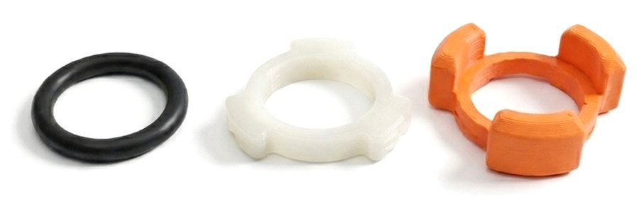

Kit de reparo do misturador
Como trocar as peças
Anel O-ring + 2 travas para purificadores IBBL. Leva poucos minutos.
O que vem no kit

- anel O-ring
- trava branca
- trava laranja
O misturador (a peça azul) não acompanha o kit.
Você vai precisar de
Uma chave de fenda pequena
Passo a passo
- Desligue o purificador da tomada e feche a entrada de água.
- Com a chave de fenda, solte a trava laranja e puxe o miolo azul para fora do misturador.
- Tire a trava branca e o anel velhos e coloque o anel O-ring novo no rebaixo do miolo.
- Coloque a trava branca nova logo acima do anel.
- Encaixe o miolo de volta e prenda com a trava laranja nova por fora, até travar.
- Abra a água e confira se não vaza.
O vídeo é uma ilustração da posição das peças.
Serve nos purificadores IBBL
- Immaginare
- Due Immaginare
- E-due
- EVO
- Evolux
- Equilibrium
Ficou com dúvida?
Chame a gente no WhatsApp que a gente explica.
Falar no WhatsAppCasa dos Bebedouros · Salto/SP · (11) 97557-1555